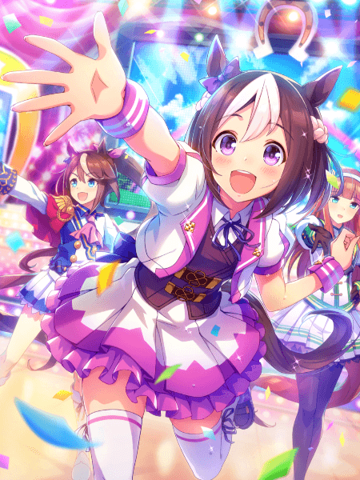

Спешл Вик — девушка с коротким каштаново-фиолетовым каре. У нее круглые глаза светло-фиолетового оттенка. Ее гоночный наряд
напоминает одежду айдолов и включает укороченный белую пиджак с розовыми рукавами и воротником, темный жилет с фиолетовой лентой
сзади, белую юбку с фиолетовым зигзагообразным узором и розовой нижней юбкой, а также высокие белые гольфы и разноцветные ботинки
(левый — темно-фиолетовый, правый — белый).
В Uma Musume у всех лошадей есть украшение (обычно бантик) на одном из ушей. Украшение на правом
ухе означает, что настоящая лошадь была жеребцом, на левом ухе — кобылой. У Спешл Вик
бантик на правом ухе, т.к Спешл Вик в реальной жизни — жеребец.
Цвет волос Спешл Вик и белая челка являются отсылкой на окрас настоящей лошади.
Спешл Вик из игры и реальной жизни
Зигзагообразный узор на подоле ее юбки напоминает зигзагообразный узор на костюме её жокея.
Точно так же причина, по которой ее ботинки имеют фиолетовые складки сверху, заключается в
том, что на спортивных брюках её жокея были фиолетовые полосы выше линии голенища.
Четырехлистный клевер на ее гоночной экипировке напоминает о ее четырех победах в G1.
О Спешл Вик
Ютака Такэ на Спешл Вик
Спешл Вик (2 мая 1995 – 27 апреля 2018) - японская чистокровная скаковая лошадь, жеребец. С 1997 по 1999 год
он выиграл десять из семнадцати своих гонок, в том числе четыре гонки категории G1.
Имя на японском: スペシャルウイーク
Происхождение имени: неизвестно. Даже сегодня до сих пор нет окончательного объяснения,
почему его назвали Спешл Вик (Special Week, англ. "Особенная Неделя"). Возможно, владелец
просто посчитал, что это имя звучит круто (но мы не можем подтвердить это, так как его владелец
скончался). Некоторые фанаты предполагают, что это означает неделю дерби (самую особенную
неделю для любителей скачек в течении года). В итоге лошадь действительно выиграла титул в дерби.
Один из источников утверждает, что "Week" связано с первой частью имени его отца Сандэй Сайленс
(Sunday, англ. "Воскресенье"), а добавление к нему "Special" делает его "Особенным сыном Сандэй
Сайленс”.
История гонок: [10-4-2-1], включая победу в Японском дерби 1998 (G1), весеннем Тэнношоу
1999 (G1), осеннем Тэнношоу 1999 (G1) и Кубке Японии 1999 (G1).
Интересные факты

Причина, по которой Спешл Вик была выбрана в качестве главного героя первого сезона
аниме-адаптации Uma Musume и героини на обложке иконки игры, заключается в прозвище настоящей
лошади – "Японский верховный главнокомандующий" ("Japanese Supreme Commander"). Также он выиграл
первое дерби для Ютака Такэ, которое фанаты считали невозможным для Такэ до 1998 года.
Альтернативный костюм Спешл Вик в игре основан на этом псевдониме.
Альтернативный костюм Спешл Вик "Японский верховный главнокомандующий"
Настоящий Спешл Вик действительно много ел и обычно проигрывал в гонках, когда набирал вес.
То же неоднократно происходило в 1 сезоне аниме-адаптации Uma Musume.
Первоначально команда настоящего Спешл Вик планировала участвовать в гонках Арк, но после
поражения перед Грасс Вандер на Таразука Кинен в 1999 году этот план был отменен.
Возможно, именно по этой причине Таразука Кинен является обязательной гонкой в игре в сюжетном
сценарии "Project L'Arc", поскольку это лучшая крупная гонка для проверки способностей
лошадей перед Арк, а также из-за этой исторической связи (то же самое относится и к некоторым
другим лошадям, таким как Китасан Блэк).
Спешл Вик является сыном Сандэй Сайленс и Кампэйн Гёрл. Кампэйн Гёрл скончалась
спустя пару дней после рождения Спешл Вик, поэтому он был воспитан сурогатной матерью. То же самое
случается и со Спешл Вик в игре. На этом факте также сделан большой акцент в аниме-адаптации
Uma Musume.
В игре Спешл Вик глубоко уважает Сайленс Сузука и является её соседом по комнате, что, скорее всего,
основано на том, что в реальной жизни у них был один жокей, Ютака Такэ, а также на том, что они оба являются детьми
Сандэй Сайленс.